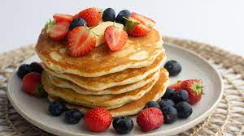

Perfect Pancakes

Description
This easy recipe makes pancakes that are light and fluffy. You only
need a few simple ingredients that you ptobably have in your kitchen right
now.
Say goodbye to the pancake mix. Everything you need to make delicious pancakes
is probably sitting in your kitchen right now. This recipe is so easy! The pancakes
aren't too sweet and are lightly scented with vanilla. They are delicious and
they are easily accepted to what you have in your kitchen. Let's Do This!
Ingredients
- Flour: Use all-purpose flour, whole wheat flour or a combination of the two. For gluten-free pancakes, use your favourite gluten-free flour bend or try buckwheat flour.
- Sugar: We use granulated sugar, but other sugars like coconut sugar, raw sugar or brown sugar will work in the recipe.
- Salt: We like to use 1/2 teaspoon of fine salt. It balances the sugar nicely and brings out lots of flavour in the pancakes. If you are using salted butter, consider reducing the salt to 1/4 teaspoon.
- Milk: Whole milk, reduced-fat and skimmed milk will work in thus recipe. For dairy-free pancakes, substitute non-dairy milk (like unsweetened almond milk or homemade oat milk). I've also used orange juice in place of the milk before and it worked nicely.
- Melted butter: You can't beat the taste of butter for this, but if you need a plant-based option, melted coconut oil or melted plant-based butter works too. We use unsalted butter, but salted butter will also work as a substitute.
- One Egg: The egg adds structure, flavour and fluffiness. I've shared tips in the frequently asked questions below for making pancakes without eggs. We use a flax egg.
- Vanilla Extract: Vanilla adds sweetness and depth of flavor. You could try other extracts too. Almond would be pretty delicious
Steps
- Whisk dry ingredients together
- Melt butter and warm milk
- Whisk wet ingredients together
- Combine the dry and wet ingredients
- Cook on a hot buttered skillet
- Enjoy!